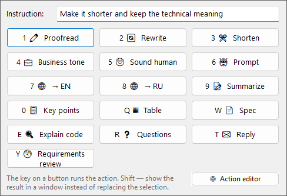
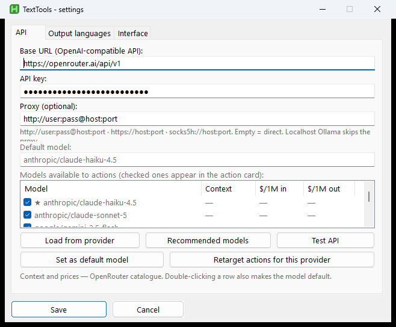
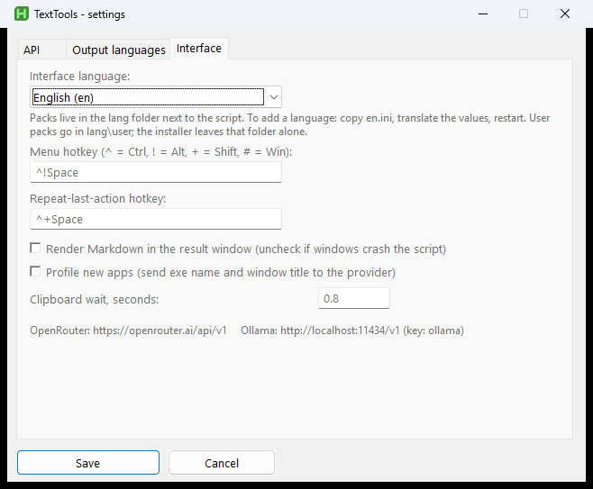
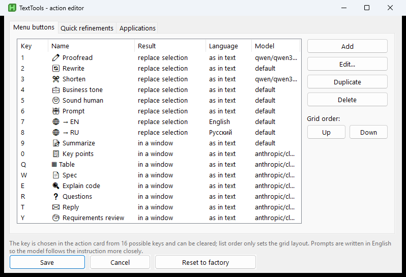
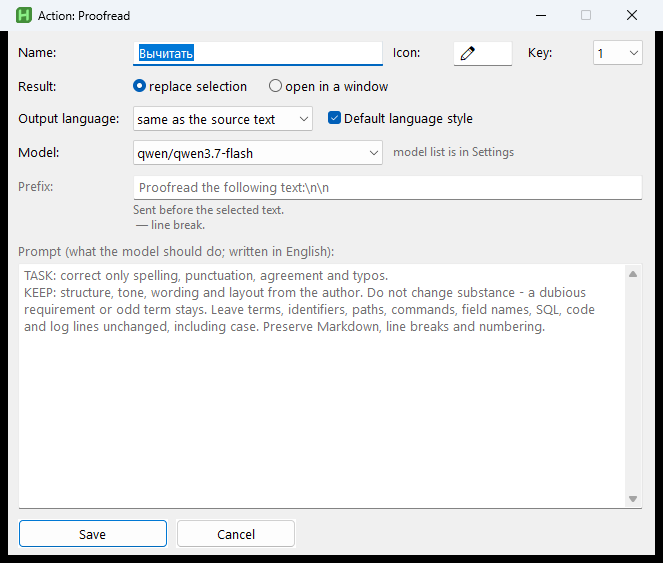
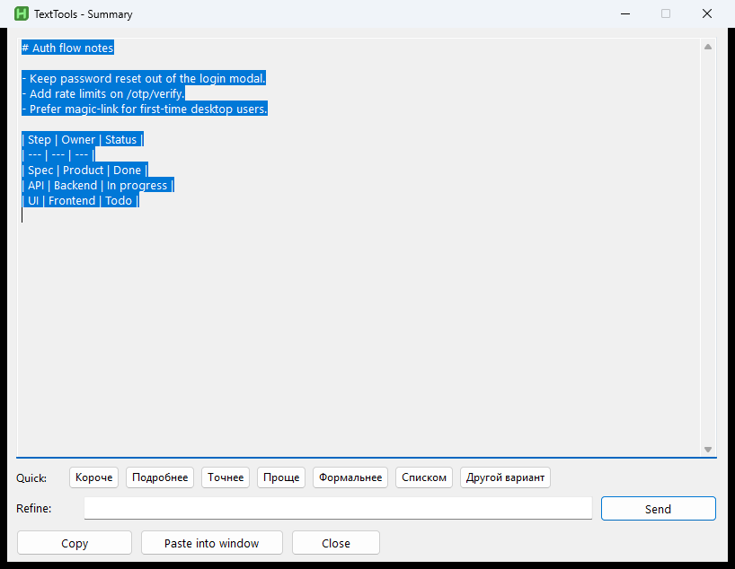

One hotkey, any window
Browser, mail, IDE, Excel — no plugins, no pasting into a chat. Open the menu, pick an action, or type your own instruction.
Windows · AutoHotkey v2
Select text in any app, hit the hotkey, pick what you want done. Proofreading, rewriting, summaries, tables, explaining code — that sort of thing. The result replaces the selection, or opens in its own window.

A normal local AutoHotkey script. Keys and settings stay on your machine; only the text for the action you run goes to the model.
Browser, mail, IDE, Excel — no plugins, no pasting into a chat. Open the menu, pick an action, or type your own instruction.
OpenRouter, OpenAI, Anthropic proxies, local Ollama — anything that speaks /v1/chat/completions. Default model plus a per-action override.
Buttons, prompts, and “where this text came from” hints (IDE, mail, spreadsheet…) live in the tray. Break something — reset to factory.
Hotkey menu, API settings, prompt editor, result window — all from the tray.





Sixteen in the grid. These are the ones I actually use most.
proofreadFix the wording, keep the meaningrewriteMake it clearer, cut the fluffsummaryCompress to the pointtableTurn it into a Markdown tablespecSketch a spec for engineeringcodeExplain a code fragmentreplyDraft a replyreqreviewReview requirementsInstall
You need AutoHotkey v2 and system curl.exe. install.ps1 copies into %LOCALAPPDATA% and registers autostart.
winget install -e --id AutoHotkey.AutoHotkey
git clone https://github.com/BelyaevAD/TextTools.git
cd TextTools
powershell -ExecutionPolicy Bypass -File .\install.ps1
# Tray → Settings → API keyThe API key lives only in local TextTools.ini. App profiling is off by default. On-disk history holds your texts — don’t commit it.
curl.exe process, not WinHTTP inside AHK. An optional HTTP/HTTPS/SOCKS proxy lives on the API settings tab.Ctrl+Alt+Space — Ctrl+Space is often taken by IMEs and other hooks.http://127.0.0.1:11434/v1.lang/*.ini; factory UI is English.